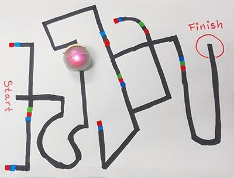

Do It! Ozobot: Track Race
 The Challenge
The Challenge
Complete the Triple Crown Challenge with Ozobot, a mini-robot that follows lines and color codes. Your challenge is to create three fun, fast tracks for Ozobot to speed through while doing turns, zig-zags, and more. When creating your paths, use a ruler to measure the distance lengths between points. Use a stopwatch to calculate the time it takes for the Ozobot to travel to each point. Then, use the ruler's measurements and stopwatch times to calculate the speed of your Ozobot.

Challenges
- Fun Run - Use a ruler to design a fun path with five or more intervals. For example, point A to point B on your path is one interval.
- Speed Test - See how fast you can get to the finish! Measure Ozobot’s speed in seconds.
- Time Trial - How many commands can Ozobot do in 60 seconds?
Getting Started
Practice writing code for Ozobot. Design a maze-like path and create the code to guide Ozobot to the end.
- Draw a path in pencil. Mark the start and finish.
- Add at least one four-way intersection.
- Use each of the following OzoCodes at least once to guide Ozobot from start to finish:
Go Left Go Right Go straight U-Turn (Line End) - Use markers to color in your path and your OzoCodes.
- Place Ozobot at the start and run your program. See if Ozobot makes it to the finish.
- Test your path at least twice.

Answer the following questions:
- Did Ozobot go the way you thought it would? Why or why not?
- What happens when Ozobot gets to an intersection and has no code to tell it which way to go?
- How can you make sure that Ozobot uses the exact path you had in mind?
- Review the Ozobot Tips
- Did you learn any of these tips through your experimentation?
Project Steps
-
Part 1: Fun Run
-
Part 2: Speed Test
-
Part 3: Time Trial
Part 1: Fun Run
- Design a path that would be fun to follow.
- You can use different color lines but do not use OzoCodes.
- Include five or more intervals. An interval is a distance from Point A to Point B. Intervals can be separated by an intersection, a turn, or a color code. If all of the intervals are connected, how many points will you have?
- Download and print a Speed Racing Tracking Sheet. (You will need a separate tracking sheet for each path you draw.) Include the name of this challenge—Fun Run. Since you will need to draw more than one path for this challenge, include the version number on the path drawing and on a Speed Racing Tracking Sheet.
- Measure the distance between each interval. Label your path with the length of each interval and record them on the.
- Time Ozobot as it follows the path. Complete three trials and record the times.
- Record the time it takes for your Ozobot to travel between each interval on the Ozobot Speed Racing Tracking Sheet.
- Record the average time of the three trials. You can use this digital stopwatch or ask your facilitator for a stopwatch.
- Calculate the speed at which Ozobot travels across each interval. Remember, an interval is a distance from one point to another, like from one intersection to the next turn.
- Calculate the Ozobot’s speed for the entire path.
Answer the following questions:
- What makes your path fun?
- How much distance did Ozobot travel as it followed your path?
- What did you notice about the speed for each interval?
- Why did Ozobot travel faster across one interval compared to another?
- Did anything surprise you?
Next, think about how you could change the path, so Ozobot finishes faster. Your path still needs to be fun for the same reasons that your first design was fun. Come up with a hypothesis. Your hypothesis should include ideas for how you’ll change your path and what you think will happen. Estimate how much time you could save with your design change. This time, you can use Ozocodes.
Test out your new path and answer the following questions:
- How much faster was Ozobot once you made your changes?
- Were your estimates accurate? Why or why not?
- Did you make any changes that did not help Ozobot finish faster?
- What did you learn from this experience that could help you when designing other Ozobot paths?

Part 2: Speed Test
Use Ozocodes to see how fast you can get from the start of your path to the finish.
- Draw a path in pencil that goes all across your paper (the long way). The path does not need to be straight.
- Measure the distance of your path, and record it on a Ozobot Speed Racing Tracking Sheet.
- Use three of the following OzoCodes at least once to guide Ozobot from start to finish. You can also use other codes that are not on this list.
Slow Pause (3 sec.) Turbo Spin - Use markers to color in your path and your OzoCodes.
- Time Ozobot as it follows the path. You can use this digital stopwatch or ask your facilitator for a stopwatch. Record the time intervals, from start to finish, on the Speed Racing Tracking Sheet.
- Repeat these steps to create two more paths. See if you can design a faster path each time.

Answer the following questions:
- What was your original plan for designing the fastest path while following the rules in step 2?
- Which OzoCodes did you use and why?
- Were you able to make changes to your path that got Ozobot to the end faster?
- Talk to other groups. Which group had the fastest path? How was that group’s fastest path similar or different from your fastest path?

Part 3: Time Trial
How many commands can Ozobot do in 60 seconds? Using your observations from the other challenges, try to estimate the number of codes Ozobot can follow in 60 seconds.
- Create a path and include that number of OzoCodes in your design.
- Make a list of these Ozocodes in order so you know how long each command takes.
- Download and print the 60-Second Bar Diagram. Or, on paper, draw one bar diagram to represent 60 seconds and separate the bar diagram into sections of 1 or 2 seconds.

Example:
- Run Ozobot to see how many of the codes it reads and properly follows in 60 seconds.
- Using your digital stopwatch, measure the time between the start of each command.
- On your bar diagram, shade and label the amount of time it took for Ozobot to execute each command.
Example:
- Repeat this activity. See if you can come up with more accurate estimates.
- See if you can get Ozobot to follow even more codes in 60 seconds. Refer to your bar diagram and command list. For example, if one command took 4 seconds and another command only took 1, maybe you can remove the longer command and replace it with shorter commands.
Answer the following questions:
- What was the plan for designing your 1st path?
- How many codes did Ozobot read and follow?
- What changes did you make to your path or codes to get Ozobot to finish more commands?
- Talk to other groups. Whose Ozobot followed the most codes? How was that group’s path similar or different from your best path?